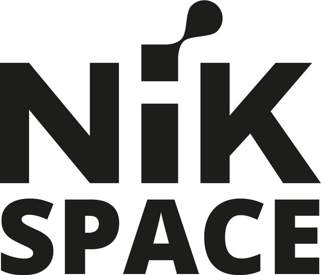
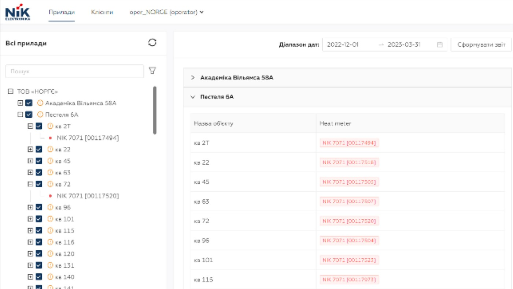

<!doctype html>
<html lang="uk">
<head>
<meta charset="utf-8">
<meta name="viewport" content="width=device-width, initial-scale=1">
<title>Програмне забезпечення — варіант</title>
<!-- One look of where product logos go on «Програмне забезпечення» (client feedback 23.11: «add product logos there in
     the future»). The page below the site header, as committed, drawn with the site's own style.css.
     ?look=now|A|B|C|D|E — the switcher (index.html) puts it in a frame. Only NIK Space has a real logo (assets/);
     the others show an empty logo slot until the client sends theirs. -->
<link rel="preconnect" href="https://fonts.googleapis.com">
<link rel="preconnect" href="https://fonts.gstatic.com" crossorigin="">
<link href="https://fonts.googleapis.com/css2?family=JetBrains+Mono:wght@400;500;600&amp;display=swap" rel="stylesheet">
<link rel="stylesheet" href="../../../v/04-11/style.css">
<style>
body{margin:0;background:#ffffff}
/* the logo itself: a real file, or an empty slot that says so */
/* the image is pinned inside the box with a margin (--pad), so a big logo file always fits whole */
.lg{position:relative;display:grid;place-items:center;flex:none;overflow:hidden;background:#ffffff;--pad:.375rem}
.lg img{position:absolute;inset:var(--pad);width:calc(100% - 2*var(--pad));height:calc(100% - 2*var(--pad));object-fit:contain}
.lkB .lg,.lkE .lg{--pad:1.5rem}
.lkC .lg{--pad:0px}
.lg.slot{box-shadow:inset 0 0 0 1.5px #c3ccd6;font-family:var(--mono);font-size:.75rem;color:var(--muted);text-transform:uppercase;letter-spacing:.06em}
.pgroup-dark .lg.slot{background:rgba(255,255,255,.06);box-shadow:inset 0 0 0 1.5px rgba(255,255,255,.3);color:#b9c6d4}
/* A — a small square logo left of the name */
.lkA .lg{width:4rem;height:4rem;border-radius:.75rem;box-shadow:0 0 0 1px var(--line)}
.lkA .lg.slot{box-shadow:inset 0 0 0 1.5px #c3ccd6;font-size:.625rem}
.lkA .pgroup-dark .lg.slot{box-shadow:inset 0 0 0 1.5px rgba(255,255,255,.3)}
.lkA-head{display:flex;align-items:center;gap:1.25rem}
/* B — a logo panel across the top of the card, as a product photo would be */
.lkB .lg{height:10rem;border-bottom:1px solid var(--line)}
.lkB .pgroup-dark .lg{border-bottom-color:rgba(255,255,255,.16)}
.lkB .lg.slot{box-shadow:none;border-bottom:1.5px dashed #c3ccd6}
/* C — the logo is the heading: the name stays only for screen readers and search */
.lkC .lg{width:10rem;height:5rem;justify-content:start;place-items:center start;background:none}
.lkC .lg img{object-position:left center}
.lkC .lg.slot{border-radius:.5rem;place-items:center;justify-content:center}
.lkC h3{position:absolute;width:1px;height:1px;overflow:hidden;clip:rect(0 0 0 0)}
/* D — a small logo in the top right corner, name and text as now */
.lkD .case{position:relative}
.lkD .lg{position:absolute;top:1.75rem;right:1.75rem;width:4.5rem;height:4.5rem;border-radius:.75rem;box-shadow:0 0 0 1px var(--line)}
.lkD .lg.slot{box-shadow:inset 0 0 0 1.5px #c3ccd6;font-size:.625rem}
.lkD .pgroup-dark .lg.slot{box-shadow:inset 0 0 0 1.5px rgba(255,255,255,.3)}
.lkD .case .bd{padding-right:7.75rem}
/* E — a tall logo panel on the left of the card, text on the right */
.lkE .case{flex-direction:row}
.lkE .lg{width:38%;border-right:1px solid var(--line)}
.lkE .pgroup-dark .lg{border-right-color:rgba(255,255,255,.16)}
.lkE .lg.slot{box-shadow:none;border-right:1.5px dashed #c3ccd6}
/* F (24.11) — NovaSys, the main platform, as a wide card across the row: text left, a screen of the program right
   (a browser window with an empty screen until the client sends a screenshot); the other three in a row below */
.ngrid.lkF-web{grid-template-columns:repeat(3,minmax(0,1fr));grid-template-rows:none}
.lkF-hero{grid-column:1/-1;display:grid;grid-template-columns:minmax(0,5fr) minmax(0,7fr)}
.lkF-hero .bd{justify-content:center;padding:3rem}
.lkF-hero .lg{width:5rem;height:5rem}
.lkF-hero h3{font-size:2rem}
.lkF-hero .btn{margin-top:.5rem}
.lkF-hero .cd{flex:0 0 auto}
.lkF-shot{display:flex;align-items:center;padding:2.5rem 2.5rem 2.5rem 0}
.lkF-win{width:100%;border-radius:.75rem;overflow:hidden;background:#ffffff;box-shadow:0 0 0 1px var(--line),0 1.5rem 3rem -1.5rem rgba(19,56,93,.35)}
.lkF-bar{display:flex;gap:.375rem;padding:.75rem 1rem;background:var(--paper);border-bottom:1px solid var(--line)}
.lkF-bar i{width:.625rem;height:.625rem;border-radius:50%;background:#c3ccd6}
/* I (24.11) — an icon in the site's pink circle instead of the logo, as the cards on «Розробка на замовлення»; on the dark block the light pink circle of «Чому НІК-ЕЛЕКТРОНІКА» */
.lkI-ic{display:grid;place-items:center;flex:none;width:3.5rem;height:3.5rem;border-radius:50%;background:var(--red-a);color:var(--red)}
.pgroup-dark .lkI-ic{background:#fbecee}
/* K (24.11) — the catalog's product card (.card, .cimg, .ct, .cd, .cgo) in two columns; a big icon where there is no picture */
.lkK-ic .lkI-ic{width:6rem;height:6rem;background:#ffffff;box-shadow:0 .75rem 2rem -1rem rgba(19,56,93,.35)}
.lkK-ic svg{width:2.75rem;height:2.75rem}
.card.lkK{box-shadow:0 0 0 1px var(--line),0 .75rem 2rem -1.5rem rgba(19,56,93,.28)}
/* white cards on the dark band read as a dark frame (Anna, 24.11): in K the apps sit on the light grey band instead */
.lkK .pgroup-dark{background:var(--paper)}
.lkK .pgroup-dark .art h2{color:var(--ink)}
.card.lkK .cd{margin-top:.5rem}
.card.lkK .cgo{margin-top:1rem}
/* L — NIK Space leads: one wide card, text left (logo instead of the name, which the logo already says), the program's screen right */
.card.lkL-hero{grid-column:1/-1;display:grid;grid-template-columns:minmax(0,4fr) minmax(0,7fr);gap:2.5rem;padding:2rem}
/* the text column runs from the top of the picture panel to its bottom: tag, logo and text at the top, the button on the bottom */
.lkL-txt{display:flex;flex-direction:column}
.lkL-logo{display:block;width:auto;height:4.5rem;margin-top:1.5rem;align-self:flex-start;mix-blend-mode:multiply}
.lkL-hero .cd{flex:0 0 auto;margin-top:1.25rem;font-size:1.125rem}
.card.lkL-hero .cgo{margin-top:auto}  /* stronger than .card.lkK .cgo, so the button sits on the bottom of the panel */
.lkL-hero .cd{margin-bottom:1.75rem}  /* at least this much between the text and the button */
.lkL-shot{display:flex;align-items:center;padding:2rem;border-radius:1rem;background:linear-gradient(180deg,var(--paper) 0%,var(--gray) 100%)}
/* L — the box pictures as big as the logos; buttons white with a thin line, so card bottoms are not one more grey */
.lkL .cimg img.cut{max-width:90%;max-height:96%}
.lkL .card .cgo{background:#ffffff;box-shadow:inset 0 0 0 1px var(--line)}
/* keep the catalog hover (dark button, white text) over the white button — without it the text went white on white */
@media (hover:hover) and (pointer:fine){ .lkL .card:hover .cgo{background:var(--ink);box-shadow:none;color:#ffffff} }
/* T1 — a small icon in the tag; T2 — the one tag that differs from its section, in red; empty tag rows collapse */
.tag.lkT-ic{display:inline-flex;align-items:center;gap:.375rem}
.tag.lkT-odd{background:rgba(200,16,46,.08);color:var(--red-h)}
/* T4 — the platform tag next to the name (and next to the logo in the lead card); cards start with the picture */
.lkT4-name{display:flex;align-items:center;justify-content:space-between;gap:.75rem;margin-top:1.125rem}
.lkT4-name .ct{margin-top:0}
.lkT4-name .tag{flex:none}
.lkT4-lead{display:flex;align-items:flex-end;gap:1rem}  /* the tag right next to the logo, on its bottom line */
.lkT4-lead .lkL-logo{margin-top:0}
.card.lkK>.cimg:first-child{margin-top:0}
.tag.lkT-none{visibility:hidden}  /* no tag: keep its height, so pictures in a row stay level */
.lkF-img{display:block;width:100%;aspect-ratio:16/10;object-fit:cover;object-position:left top}
.lkF-scr{display:grid;place-items:center;aspect-ratio:16/10;background:repeating-linear-gradient(135deg,#f4f6f8 0 .75rem,#eef1f4 .75rem 1.5rem);font-family:var(--mono);font-size:.75rem;letter-spacing:.06em;text-transform:uppercase;color:var(--muted)}
@media (max-width:900px){
  .lkF-hero{grid-template-columns:minmax(0,1fr)}
  /* the screen goes on top, so the button still ends the card */
  .lkF-hero .bd{padding:2rem}
  .lkF-shot{order:-1;padding:2rem 2rem 0}
}
@media (max-width:900px){
  .ngrid.lkF-web{grid-template-columns:minmax(0,1fr)}
  .card.lkL-hero{grid-template-columns:minmax(0,1fr);gap:1.25rem;padding:1rem}
  .lkL-shot{order:-1;padding:1rem}
  .lkL-logo{height:3.5rem;margin-top:1rem}
  .lkL-hero .cgo{margin-top:1.25rem}
}
@media (max-width:600px){
  .lkF-hero .bd{padding:1rem}
  .lkF-hero h3{font-size:1.5rem}
  .lkF-hero .lg{width:3.5rem;height:3.5rem}
  .lkF-shot{padding:1rem 1rem 0}
  .lkA .lg{width:3rem;height:3rem}
  .lkI-ic{width:3rem;height:3rem}
  .lkB .lg{height:7.5rem}
  .lkD .lg{top:1rem;right:1rem;width:3.5rem;height:3.5rem}
  .lkD .case .bd{padding-right:5.5rem}
  .lkE .case{flex-direction:column}
  .lkE .lg{width:auto;height:7.5rem;border-right:0;border-bottom:1px solid var(--line)}
  .lkE .lg.slot{border-right:0;border-bottom:1.5px dashed #c3ccd6}
}
</style>
</head>
<body>
<!-- the site sets its font and text colour on this wrapper (shell.js), not in style.css -->
<div id="root" style="font-family: Geologica, sans-serif; color: var(--text); background: #ffffff; overflow-x: clip"></div>
<script>
const look0 = new URLSearchParams(location.search).get('look') || 'now';
// T1–T3 (24.11) are L with other tags: T1 icon + platform, T2 only where the program differs from its section, T3 who it is for
const T4 = look0 === 'T4';
const TAGS = ['T1', 'T2', 'T3', 'T4'].includes(look0) ? (T4 ? 'T1' : look0) : '';
const look = TAGS ? 'L' : look0;
const LOGO = { 'NIK Space': '../../../assets/fdc858a8-p-space.jpg' };
// G: also a real NIK Space screen (page 5 of nik-el.com/elfinder/NIK-Space.pdf); the «U» cut from the UNIK box was dropped on 24.11
const SHOT = { 'NIK Space': '../../../assets/e98e11ea-space-screen.jpg' };
const HERO = look === 'G' || look === 'L' ? 'NIK Space' : 'NovaSyS';
const WEB = [
  ['NovaSyS', 'Автоматизована система контролю та обліку енергоресурсів від виробника лічильників NIK. Сама збирає дані з лічильників, перевіряє їх і перетворює на облік, баланси та звіти. Дві модифікації — для енергопостачання і для промисловості.'],
  ['NIK Space', 'Комплексна система віддаленого збору показань лічильників для енергокомпаній та ОСББ. Оптимізує обслуговування будинку, заощаджує споживачам час і зменшує витрати.'],
  ['UNIK', 'Програма для Windows, через яку налаштовують і зчитують лічильники NIK на місці встановлення. До оптичного порту лічильника вона підключається через оптичну головку OP-03.'],
  ['AGSM GURU', '[уточнити]'],
];
const APPS = [
  ['NIK-Surfer', 'Застосунок для збору показань лічильників по радіоканалу wM-Bus у парі з апаратним RF-to-USB модулем NIK-Surfer.'],
  ['NIK BT-DLMS', '[уточнити]'],
];
const btn = `<a class="btn btn-line">Детальніше<svg width="18" height="18" viewBox="0 0 24 24" fill="none" stroke="currentColor" stroke-width="2.2" stroke-linecap="round" stroke-linejoin="round" aria-hidden="true"><path d="M5 12h14M13 6l6 6-6 6"></path></svg></a>`;
const logo = (t) => LOGO[t] ? `<span class="lg"></span>` : `<span class="lg slot">логотип</span>`;
// I — an icon of what the program does (the site's pink circle), no logos
const ICON = {
  'NovaSyS': '<path d="M3 3v18h18"/><path d="m7 15 4-4 3 3 5-6"/>',
  'NIK Space': '<rect x="4" y="3" width="16" height="18" rx="1.5"/><path d="M9 7h1M14 7h1M9 11h1M14 11h1M9 15h1M14 15h1M10 21v-3h4v3"/>',
  'UNIK': '<path d="M4 21v-7M4 10V3M12 21v-9M12 8V3M20 21v-5M20 12V3M1 14h6M9 8h6M17 16h6"/>',
  'AGSM GURU': '<path d="M2 20h.01M7 20v-4M12 20v-8M17 20V8M22 20V4"/>',
  'NIK-Surfer': '<path d="M12 12h.01"/><path d="M8.5 8.5a5 5 0 0 0 0 7M15.5 8.5a5 5 0 0 1 0 7M5.6 5.6a9 9 0 0 0 0 12.8M18.4 5.6a9 9 0 0 1 0 12.8"/>',
  'NIK BT-DLMS': '<path d="m7 7 10 10-5 5V2l5 5L7 17"/>',
};
const icon = (t) => '<span class="lkI-ic"><svg width="26" height="26" viewBox="0 0 24 24" fill="none" stroke="currentColor" stroke-width="2" stroke-linecap="round" stroke-linejoin="round" aria-hidden="true">' + (ICON[t.split(String.fromCharCode(160)).join(' ')] || '') + '</svg></span>';
// K — catalog product cards: tag, picture panel (img.cut = cut-out with a shadow, img.flat = white-background file), name, text
const PIC = {
  'NovaSyS': ['../../../assets/e4d2525b-novasys-box.png', 'cut'], 'UNIK': ['../../../assets/4e49b42c-unik-box.png', 'cut'],
  'NIK Space': ['../../../assets/fdc858a8-p-space.jpg', 'flat'], 'NIK-Surfer': ['../../../assets/ac6c1211-nik-surfer.jpg', 'flat'],
};
const KIND = { 'UNIK': 'Програма для Windows', 'NIK-Surfer': 'Мобільний застосунок', 'NIK BT-DLMS': 'Мобільний застосунок' };
// L: the tag says where the program runs (the section heading already says what kind it is)
const RUNS = { 'UNIK': 'Windows', 'NIK-Surfer': 'Мобільний', 'NIK BT-DLMS': 'Мобільний' };
const TI = { 'Веб': '<circle cx="12" cy="12" r="9"/><path d="M3 12h18M12 3c3 3 3 15 0 18M12 3c-3 3-3 15 0 18"/>', 'Windows': '<rect x="3" y="4" width="18" height="14" rx="2"/><path d="M3 8h18M8 21h8"/>', 'Мобільний': '<rect x="7" y="2" width="10" height="20" rx="2"/><path d="M11 18h2"/>' };
const FOR = { 'NovaSyS': 'Енергопостачання · промисловість', 'NIK Space': 'Енергокомпанії · ОСББ', 'UNIK': 'Налаштування лічильників', 'NIK-Surfer': 'Радіоканал wM-Bus' };
const tagHtml = (k) => { const run = RUNS[k] || 'Веб';
  if (TAGS === 'T1') return '<span class="tag lkT-ic"><svg width="14" height="14" viewBox="0 0 24 24" fill="none" stroke="currentColor" stroke-width="2" stroke-linecap="round" stroke-linejoin="round" aria-hidden="true">' + TI[run] + '</svg>' + run + '</span>';
  if (TAGS === 'T2') return k === 'UNIK' ? '<span class="tag lkT-odd">Програма для Windows</span>' : '<span class="tag lkT-none">—</span>';
  if (TAGS === 'T3') return FOR[k] ? '<span class="tag">' + FOR[k] + '</span>' : '<span class="tag lkT-none">—</span>';
  return '<span class="tag">' + run + '</span>'; };
const lhero = ([t, d]) => `<a class="card lkK lkL-hero"><span class="lkL-txt">${T4 ? '' : `<span class="ctop">${tagHtml('NIK Space')}</span>`}${T4 ? '<span class="lkT4-lead">' : ''}${T4 ? tagHtml('NIK Space') + '</span>' : ''}<span class="cd">${d}</span><span class="cgo"><span class="cgo-in">Детальніше<svg width="16" height="16" viewBox="0 0 24 24" fill="none" stroke="currentColor" stroke-width="2.2" stroke-linecap="round" stroke-linejoin="round" aria-hidden="true"><path d="M5 12h14M13 6l6 6-6 6"></path></svg></span></span></span><span class="lkL-shot"><span class="lkF-win"><span class="lkF-bar"><i></i><i></i><i></i></span></span></span></a>`;
const plain = (t) => t.split(String.fromCharCode(160)).join(' ');
const kcard = ([t, d]) => { const k = plain(t), p = PIC[k];
  return `<a class="card lkK">${T4 ? '' : `<span class="ctop">${look === 'L' ? tagHtml(k) : `<span class="tag">${KIND[k] || 'Веб-платформа'}</span>`}</span>`}<span class="cimg">${p ? `` : `<span class="lkK-ic">${icon(t)}</span>`}</span>${T4 ? `<span class="lkT4-name"><span class="ct">${t}</span>${tagHtml(k)}</span>` : `<span class="ct">${t}</span>`}<span class="cd">${d}</span><span class="cgo"><span class="cgo-in">Детальніше<svg width="16" height="16" viewBox="0 0 24 24" fill="none" stroke="currentColor" stroke-width="2.2" stroke-linecap="round" stroke-linejoin="round" aria-hidden="true"><path d="M5 12h14M13 6l6 6-6 6"></path></svg></span></span></a>`; };
const card = ([t, d]) => {
  if (look === 'K') return kcard([t, d]);
  if (look === 'L') return plain(t) === 'NIK Space' ? lhero([t, d]) : kcard([t, d]);
  if (look === 'I') return `<article class="case"><div class="bd"><div class="lkA-head">${icon(t)}<h3>${t}</h3></div><p class="cd">${d}</p>${btn}</div></article>`;
  if (look === 'now') return `<article class="case"><div class="bd"><h3>${t}</h3><p class="cd">${d}</p>${btn}</div></article>`;
  // F — the main product big, the rest as on the site now (A): small logo left of the name
  if ((look === 'F' || look === 'G') && t === HERO) return `<article class="case lkF-hero"><div class="bd"><div class="lkA-head">${logo(t)}<h3>${t}</h3></div><p class="cd">${d}</p>${btn}</div><div class="lkF-shot"><div class="lkF-win"><span class="lkF-bar"><i></i><i></i><i></i></span>${SHOT[t] && look === 'G' ? `` : `<span class="lkF-scr">скриншот інтерфейсу ${t}</span>`}</div></div></article>`;
  if (look === 'A' || look === 'F' || look === 'G') return `<article class="case"><div class="bd"><div class="lkA-head">${logo(t)}<h3>${t}</h3></div><p class="cd">${d}</p>${btn}</div></article>`;
  if (look === 'C') return `<article class="case"><div class="bd">${logo(t)}<h3>${t}</h3><p class="cd">${d}</p>${btn}</div></article>`;
  if (look === 'D') return `<article class="case">${logo(t)}<div class="bd"><h3>${t}</h3><p class="cd">${d}</p>${btn}</div></article>`;
  return `<article class="case">${logo(t)}<div class="bd"><h3>${t}</h3><p class="cd">${d}</p>${btn}</div></article>`; // B, E
};
document.getElementById('root').innerHTML = `<main id="main" class="lk${look}${look === 'F' || look === 'G' ? ' lkA lkF' : look === 'L' ? ' lkK' : ''}">
<section class="phead"><div class="wrap">
  <nav aria-label="Навігаційний ланцюжок"><ol class="crumbs"><li><a>Головна</a></li><li><a>Каталог</a></li><li><span aria-current="page">Програмне забезпечення</span></li></ol></nav>
  <h1>АСКОЕ та Програмне забезпечення</h1>
  <p class="lead">Програмне забезпечення NIK для збору, обробки та аналізу даних із приладів обліку. Ми розробляємо його самі, тому воно повністю сумісне з лічильниками та контролерами NIK.</p>
  <div class="tabs"><a>Продукти</a><a>Послуги</a><a aria-current="page">Програмне забезпечення</a></div>
</div></section>
<div class="pbody">
  <div class="wrap"><div class="pgroup"><div class="art"><h2>Веб-платформи</h2></div><div class="ngrid ${look === 'F' || look === 'G' || look === 'L' ? 'lkF-web' : 'pair'}">${(look === 'G' || look === 'L' ? [...WEB].sort((a, b) => (b[0].split(String.fromCharCode(160)).join(' ') === HERO) - (a[0].split(String.fromCharCode(160)).join(' ') === HERO)) : WEB).map(card).join('')}</div></div></div>
  <section class="pgroup-dark"><div class="wrap pgroup"><div class="art"><h2>Мобільні застосунки</h2></div><div class="ngrid pair">${APPS.map(card).join('')}</div></div></section>
</div>
<div style="height:4rem"></div>
</main>`;
// tell the switcher how tall the page is, so the frame shows it whole
const report = () => parent.postMessage({ h: document.documentElement.scrollHeight }, '*');
addEventListener('load', report); new ResizeObserver(report).observe(document.body);
</script>
</body>
</html>
